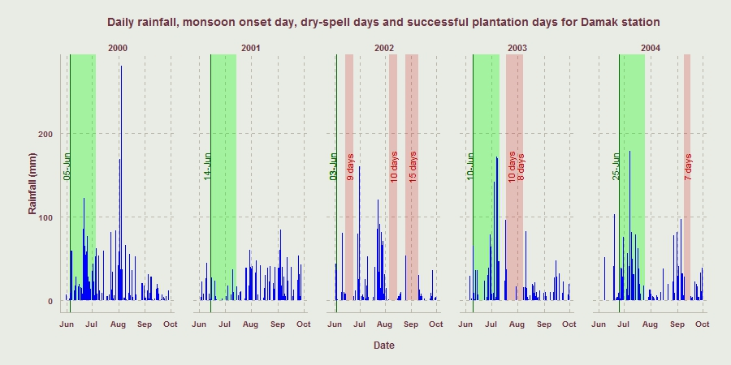
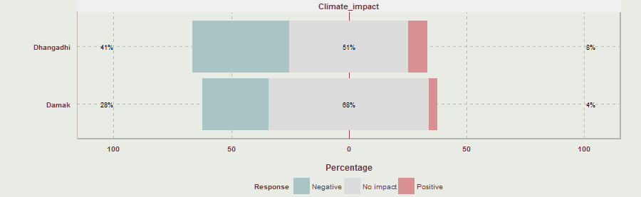
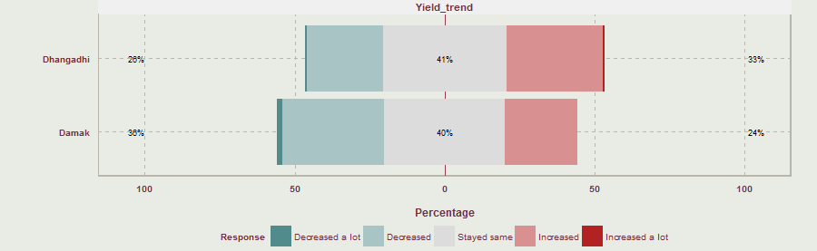

Human mobility and resilience -
livelihood diversification strategies in the Nepali plains
By Asheshwor (ash)
asheshworman.shrestha@adelaide.edu.au,
PhD Candidate, Geography, Environment & Population,
The University of Adelaide
1 September 2014
Overview
- Introduction
- Risk exposure to agriculture and resource access
- Perception and adaptation to climate change
- Human mobility
- Conclusion
1. Introduction
- Objective: To examine the linkage between perception of climate change impact to agriculture and access to resources, and subsequent livelihood decisions
- Project background
- Field survey (September 2013 - March 2014)
- Climate data analysis (daily records from 1970-2013)
- Open-ended interviews (November 2013-March 2014)
The context of Nepali plains
- Destination of in-migrants moving from the hills
- Government-led migration in the 50s and 60s
- Resettlement programs for victims of landslides and floods
- Tarai has witness of massive socio-ecological change
- Forest clearing and malaria eradication
- Agricultural extensification to feed the nation
- Urbanization
- Tarai is also seen as a region neglected by the central government (Majumdar 2006)
Household characteristics
| Damak | Dhangadhi | |
| Sample households | 143 | 151 |
| Total households | 3,989 | 4,624 |
| Total population in selected wards | 15,909 | 25,726 |
| Mean age of respondents | 45.15 | 39.6 |
| Gender distribution | M: 75.52% ; F: 24.48% | M: 43.05%; F: 56.95% |
| Livestock ownership | 68.53% | 96.69% |
| Involvement in agriculture | 77.62% | 90.07% |
| HH with migrant worker | 49.65% | 56.28% |
| HH w/ flood experience | 49.65% | 56.29% |
2. Risk exposure to agriculture
- High inter-annual variability in rainfall
- Agricultural infrastructure has not been modernized
- Frequent flash floods
Rainfall patterns
Inter-annual variability in mean monthly rainfall in Tarahara Station
Monsoon onset day and dry spell days
- Monsoon onset day:
any rainy day after 1st June with total rainfall of three consecutive days exceeding 30 mm. A day is counted as a rainy day if there is a rainfall of at least 0.85 mm - Dry spell days:
at least 7 consecutive days of no rainfall after commencement of monsoon in the next 30 days - Successful plantation days:
no dry-spell days in 30 days after the monsoon onset date
Monsoon onset day and dry spell days
Dry spell days, monsoon onset day and successful plantation day for Damak station for 5 years
Cropping calendar

Cropping calendar for major crops in Tarai showing daily rainfall (blue) and daily minimum temperature (magenta)
Cooking fuel
Firewood was the most popular fuel for cooking used by 77% of households
Agricultural infrastructure
- Canal system: only small percentage with access to canals, and the structure has not been properly maintained
- Electricity: supply is not constant, up to 18 hours per day load shedding
- Cost barrier: cost of pump, cost of bore hole, cost of fuel (electricity/petrol/diesel) and cost of pipe
- Only 3 respondents had started harvesting a new crop in the last 5 years
- Marginalized communities have been left out from the decision making process in resource management including community forestry (Gauli & Rishi 2004)
Flash floods
- Sediment deposit on the field was the most reported problem from floods
- No mechanism for compensation when land is lost
- Only 18 respondents had received any form of relief
- No insurance mechanism

3. Perception and adaptation
- Perception of climate change
- Perception of trends in agricultural output
- On-farm adaptation
Perception of climate change
Impact from climatic variables
Perception of trends in agricultural output
Adaptation responses
- Flood control measures
- Farmers value rain over irrigation
"Nothing can be done"
"When the field was dry, land owner accused me of not working hard enough. Pump set is not available when needed."
"Rainfall is best. No nutrient in pumped water."
4. Human mobility in the Tarai
- Contemporary destinations
- Demographics
- Income
- Reasons reported
Migrants' gender, age, and length of foreign employment by destination regions
Formal education of migrants
Remittances by destination
Use of remittances
Migration as adaptation
Migration characteristics summary
- Those with higher education are staying back whereas those with mid-level education opt for foreign employment
- Remittances not only provide a supplemental income for households but also enable marginalized household to contest the existing social and cultural norms (Sunam 2014)
5. Conclusion
- Tarai’s agricultural system has been under stress from environmental and lack of modernization
- Foreign employment has provided a safe haven for those seeking an alternative livelihood options
- Migration as adaptation (Black et al. 2011; Black, Kniveton & Schmidt-Verkerk 2011)
- The use of remittances basic household activities and the fact that remittance income is disproportionately larger than income made at home, the trend in foreign employment is expected to continue
Discussion
Questions / comments
Acknowledgements
- Field-work funding from Department of Geography, Environment & Population, University of Adelaide
- Field research assistants Shreekrishna Chaudhary and Sujan Ranjitkar
- Local contact persons - Umesh Dhimal, Tejpal Dhimal, Laxmi Niraula and Kanchan Ojha
- Special thanks to Damak Municipality, Dhangadhi Municipality, Mercycorps Nepal, ADF Nepal Pvt. Ltd., and Neeraj Dangol
A shorter version of this presentation will be delivered at
the NCCARF Climate Adaptation 2014 conference on 2nd October 2014 at Gold Coast, QLD
References
- Black, R, Bennett, SRG, Thomas, SM & Beddington, JR 2011, 'Migration as adaptation', Nature Climate Change, vol. 478. Black, R, Kniveton, D & Schmidt-Verkerk, K 2011, 'Migration and climate change: towards and integrated assessment of sensitivity', Environment and Planning A, vol. 73, pp. 431-450.
- Foresight: Migration and Global Environment Change - Future Challanges and Opportunities, 2011, The Government Office for Science, London. Gauli, K & Rishi, P 2004, 'Do the marginalised class really participate in community forestry? A case study from western Terai region of Nepal', Forests Trees and Livelihoods, vol. 14, no. 2-4, //, pp. 137-147.
- Majumdar, M 2006, 'धनी ठाऊँ, गरिब अर्थतन्त्र (Rich place, poor economy)', in M Mainali & B Thapa (eds), मधेस: समस्या र संभावना (Madhesh: challanges and opportunities), Social Science Baha, Himal Association, Lalitpur, Nepal, pp. 29-40.
- Sunam, R 2014, 'Marginalised Dalits in International Labour Migration: Reconfiguring Economic and Social Relations in Nepal', Journal of Ethnic and Migration Studies.